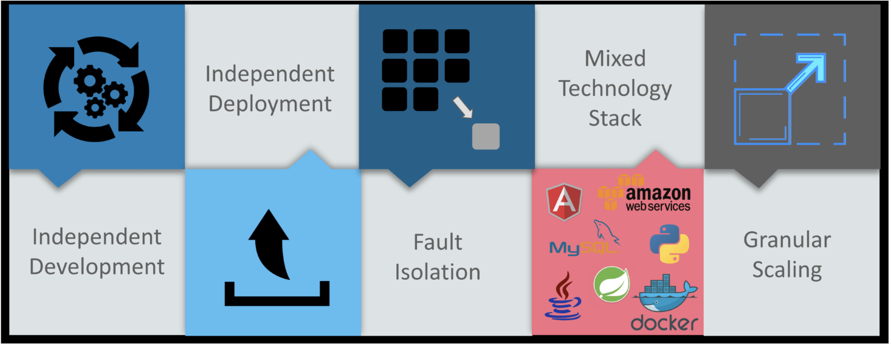
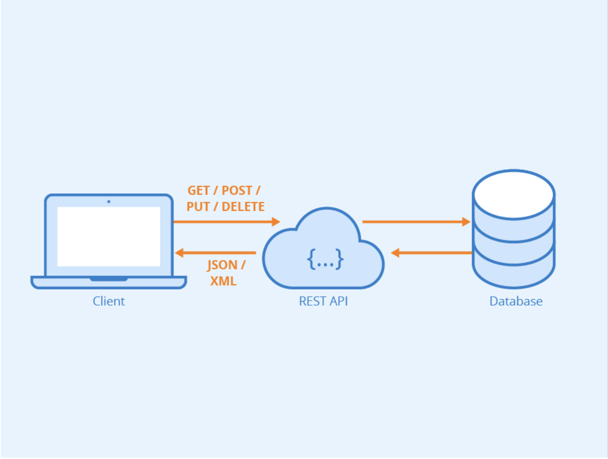
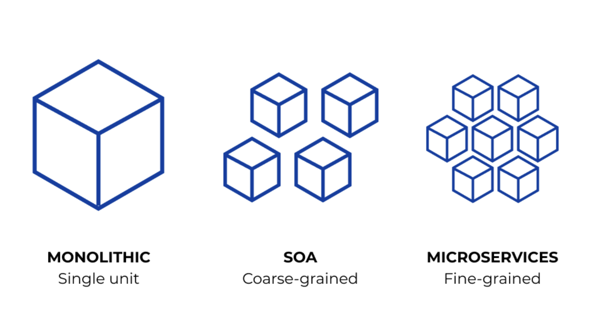
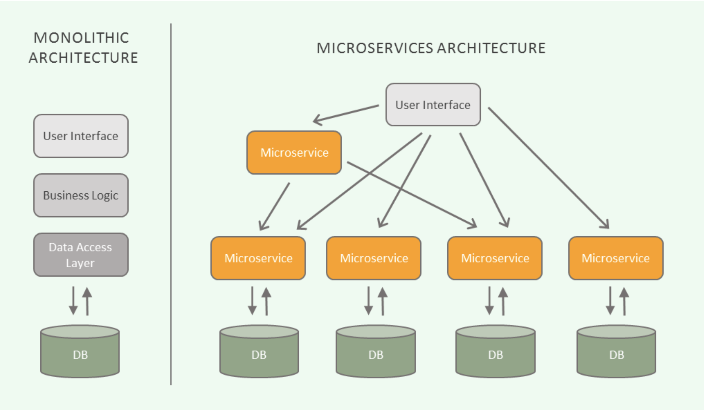

Soy originario de Irapuato y actualmente estudio la carrera Ingeniería en Tecnologías Computacionales (ITC)
en el Tec de monterrey. Me gustan los rompecabezas y tengo un gran aprecio por los videojuegos prácticamente desde niño.
Actualmente se tocar piano y he hecho algunas interpretaciones musicales de piezas principalmente de videojuegos.
Actualmente curso cuarto semestre. No es mi primera vez creando algo en HTML5, sin embargo, es cierto que ha pasado tiempo desde que trabaje con este.
Espero recordar los conceptos básicos y fundamentales a través de estos laboratorios para así poder integrarlos al proyecto.
Algunos de los videojuegos que más me gustan son:
Starbound
For Honor
Hollow Knight
Minecraft
ASTRONEER
Terraria
Preguntas primera actividad
¿Cuál es la diferencia entre Internet y la World Wide Web?
Internet:Red informática mundial, descentralizada, formada por la conexión directa entre computadoras mediante un protocolo especial de comunicación. (RAE, s.f.)
World Wide Web: Abreviado a WWW, se rata de una red de alcance mundial, que consiste en un complejo sistema de hipertextos e hipermedios interconectados entre sí y a los que puede tenerse acceso mediante una conexión a Internet y un conjunto de software especializado.
Por lo tanto, la diferencia radica en que el internet es la conexión entre computadoras y dispositivos mientras que la World Wide Web (WWW) es la enorme colección de paginas que se asientan sobre esa conexión, esto significa que se requiere de internet para acceder a la web.
¿Cuáles son las partes de un URL?
Uniform Resourse Locator Consiste en la secuencia estándar de caracteres que identifica y permite localizar y recuperar una información determinada en la web. Consiste de las siguientes partes básicas:
Protocolo de red - Indica el protocolo de comunicación que se utilizará para acceder al recurso. Algunos ejemplos son HTTP (Hypertext Transfer Protocol), HTTPS (HTTP Secure) para páginas web, FTP (File Transfer Protocol), etc.
Servicio/Subdominio - Es la dirección que identifica de manera única a una página web en Internet.
Dominio - Hace referencia al nombre único que identifica a un sitio web. Gracias a los nombres de dominio, no tenemos que utilizar direcciones IP para acceder a cada uno de los recursos de Internet.
TLD/Extensión - Top Level Domains, es la parte final de una dirección web e indica la naturaleza del dominio (.com, .org, .edu, etc.).
Ruta/Carpeta - Describe el contenido dentro de una subcarpeta.
Slug - Especifica la ubicación del recurso dentro del servidor.
Adicionalmente es posible encontrar
Parámetros de consulta - Son datos opcionales que se pueden incluir en la URL para pasar información al servidor, "?q=valor".
Fragmentos - Opcionalmente, se puede especificar un fragmento para enlazar directamente a una sección específica de una página web.
¿Cuál es el propósito de los métodos HTTP: GET, HEAD, POST, PUT, PATCH, DELETE?
HTTP define un conjunto de métodos de petición para indicar la acción que se desea realizar para un recurso determinado. Cada método tiene un propósito específico:
GET - Se utiliza para solicitar datos de un recurso específico en el servidor.
HEAD - Es similar a GET, pero solo solicita los encabezados de respuesta del servidor, sin solicitar el cuerpo del recurso.
PUT - Se utiliza para enviar datos al servidor para crear o reemplazar el recurso especificado por la URL con los datos proporcionados.
POST - Se utiliza para enviar datos al servidor para su procesamiento.
PATCH - Se utiliza para aplicar modificaciones parciales a un recurso (actualizar).
DELETE - Se utiliza para solicitar al servidor que elimine el recurso especificado por la URL.
¿Qué método HTTP se debe utilizar al enviar un formulario HTML, por ejemplo cuando ingresas tu usuario y contraseña en algún sitio? ¿Por qué?
El método para enviar datos es post, y este es el que debe usarse para el formulario. Los datos enviados a través de post no son visibles en la URL a diferencia de get, lo que hace que post sea más seguro.
Post no tiene limitaciones en la cantidad de datos que puede enviar mientras que get está limitado por la longitud máxima del URL.
¿Qué método HTTP se utiliza cuando a través de un navegador web se accede a una página a través de un URL?
Al acceder a una página a través de un navegador utilizando sólo una URL, el método por defecto es get. El métdo get se usa para solicitar recursos específicos del servidor. Al escribir una URL y dar enter, el navegador envía una solicitud get al servidor para obtener la página web correspondiente.
Un servidor web devuelve una respuesta HTTP con código 200. ¿Qué significa esto? ¿Ocurrió algún error?
No, no hubo ningún error. El código de respuesta de estado satisfactorio HTTP 200 OK indica que la solicitud ha tenido éxito. Una respuesta 200 es almacenable de forma predeterminada.
¿Es responsabilidad del desarrollador corregir un sitio web si un usuario reporta que intentó acceder al sitio y se encontró con un error 404? ¿Por qué?
El error 404 not found indica que el servidor no pudo encontrar el contenido solicitado. Este código de respuesta es uno de los más famosos dada su alta ocurrencia en la web.
Por lo tanto, si es responsabilidad del desarrollador corregir su sitio web, porque el desarrollador es quien tiene el conocimiento técnico para identificar y solucionar el problema,
tiene la responsabilidad de darle mantenimiento y de garantizar que el sitio web funcione correctamente.
¿Es responsabilidad del desarrollador corregir un sitio web si un usuario reporta que intentó acceder al sitio y se encontró con un error 500? ¿Por qué?
El error 500 internal server error indica que el servidor ha encontrado una situación que no sabe cómo manejarla.
Es responsabilidad del desarrollador corregir un sitio web si se reporta este error.
El error 500 puede ser causado por problemas en el código del servidor, como errores de programación, falta de recursos o problemas de configuración.
Es responsabilidad del desarrollador identificar y corregir estos problemas para restaurar la funcionalidad del sitio web. El desarrollador es responsable de garantizar un buen funcionamiento y experiencia de usuario.
¿Qué significa que un atributo HTML5 esté depreciado o desaprobado (deprecated)? Menciona algunos elementos de HTML 4 que en HTML5 estén desaprobados.
La última especificación oficial de HTML se publicó en diciembre de 1999 y se denomina HTML 4.01. Los atributos HTML proporcionan información adicional a los elementos HTML sobre cómo se debe procesar o mostrar el contenido.
Los atributos se agregan a las etiquetas HTML utilizando la sintaxis de "nombre de atributo=valor". Cuando un atributo HTML5 está "depreciado" o "desaprobado" (deprecated), significa que aunque aún es compatible y funcionará en los navegadores web, se considera obsoleto o no se recomienda su uso.
Algunos de estos son:
Elemento font
Atributo align
Atributo frameborder
Atributo border
¿Cuáles son las diferencias principales entre HTML 4 y HTML5?
HTML5 representó una evolución significativa sobre HTML 4, con una serie de nuevas características, mejoras y estándares que abordan las necesidades de la red moderna.
Algunas diferencias principales son:
Nuevos elementos semánticos
Soporte multimedia mejorado
Formularios mejorados
Gráficos y animaciones
Almacenamiento local
Geolocalización
Soporte para aplicaciones web
¿Qué componentes de estructura y estilo tiene una tabla?
Una tabla es un conjunto estructurado de datos distribuidos en filas y columnas (datos tabulados).
Una tabla permite buscar con rapidez y facilidad valores entre diferentes tipos de datos que indiquen algún tipo de conexión.
Componentes de estructura
Elemento table
Elemento tr (table row)
Elemento th (table header)
Elemento td (table data)
Element caption
Componentes de estilo
Atributos de estilo en línea
Frameworks y librerías CSS
¿Cuáles son los principales controles de una forma HTML5?
HTML5 introdujo varios nuevos tipos de controles de formulario que permiten a los desarrolladores crear formularios más ricos y funcionales.
Algunos controles de formulario en HTML5 son:
¿Cuál es el ciclo de vida de los sistemas de información?
El ciclo de vida de los sistemas de información es un marco metodológico que describe las etapas típicas por las que pasa un sistema de información, desde su concepción inicial hasta su despliegue, mantenimiento y eventual retiro.
Hay varios modelos, pero el más común es el modelo en cascada:
Planificación
Análisis
Diseño
Implementación
Pruebas
Despliegue
Mantenimiento
¿Cuál es el ciclo de desarrollo de sistemas de información?
A diferencia del ciclo de vida del sistema de información, que se centra en las fases del proyecto desde la concepción hasta el despliegue y mantenimiento, el ciclo de desarrollo se enfoca en las actividades específicas de desarrollo de software.
Recolección de requisitos
Diseño
Implementación
Pruebas
Despliegue
Mantenimiento
Hola mundo Minecraft
Manzanas
Diamantes
Comida
Minerales
Tabla de objetos de Minecraft
Agregando estilo con CSS
Como ingeniero de software ¿cuál es tu recomendación sobre el uso de !important en un CSS?
La directiva !important en CSS es utilizada para otorgar prioridad a una regla específica sobre otras reglas que podrían aplicarse al mismo elemento HTML.
Cuando se añade !important a una propiedad en una regla CSS, esta propiedad prevalecerá sobre propiedades con la misma especificidad que no tengan !important.
La recomendación es tratar de evitar el uso de !important en la medida de lo posible. Si bien puede ser útil en ciertas situaciones para problemas de especificidad,
su uso excesivo puede llevar a un código difícil de mantener y depurar. Además, puede ser muy complicado realizar actualizaciones futuras.
Si se pone una imagen de fondo en una página HTML, ¿por qué debe escogerse con cuidado?
Lo ideal cuando se trata de un fondo, es que este no sea impedimento para que el usuario o cliente consulte lo que el sitio web tiene de forma eficiente. Un fondo inefectivo dificulta la lectura y en algunos casos la hace ilegible.
Las imagenes no se quedan atrás, pues dependiendo de los colores, pueden dificultar la legibilidad del contenido. Además, se le suman algunos aspectos:
Legibilidad del contenido - La imagen de fondo no debe interferir con la legibilidad de contenido
Coherencia visual - La imagen debe complementar el diseño general de la página y ser coherente con su contenido
Velocidad de carga - Las imagenes de fondo grandes pueden afectar negativamente el tiempo de carga de la página
Compatibilidad con dispositivos - La imagen debe ser compatible con una variedad de dispositivos y tamaños de pantalla
Accesibilidad - Se debe tener en cuenta la accesibilidad web al elegir una imagen de fondo.
Como ingeniero de software, ¿cuál es tu recomendación al elegir las unidades de un propiedad de estilo entre %, px y pt?
La elección de casa unidad depende del contexto específico y requerimientos del diseño, así como usabilidad del sitio web o aplicación.
Unidad
Descripción
Consideraciones
Porcentaje(%)
Representa una proporción del tamaño del contenedor padre.
Puede ser útil para crear diseños responsivos, es decir, que se ajusten en relación al tamaño del contenedor.
Es útil cuando se quiere que los elementos escalen en relación al contenedor,
aunque los porcentajes pueden tener comportamientos impredecibles en ciertos contextos, especialmente cuando se trabaja con elementos anidados o con márgenes y rellenos.
Píxeles(px)
Representa un píxel de la pantalla del dispositivo de visualización.
Los píxeles proporcionan un control preciso sobre las dimensiones y el posicionamiento de los elementos.
El uso de píxeles puede garantizar una apariencia consistente en diferentes dispositivos y resoluciones de pantalla.
Sin embargo, los píxeles pueden no escalar adecuadamente en dispositivos de alta resolución, lo que puede resultar en elementos pequeños o borrosos en pantallas de alta densidad de píxeles
Puntos(pt)
Representa 0.3527 mm, lo que es equivalente a 1/72 de una pulgada en una pantalla de visualización. En la impresión, un punto es igual a 1/72 de una pulgada en el papel.
Los puntos son una unidad de medida comúnmente utilizada en diseño para impresión.
Sin embargo, los puntos pueden no ser la mejor opción para la web, ya que no escalan con el tamaño de la ventana del navegador
y pueden causar problemas de legibilidad y usabilidad en diferentes dispositivos y resoluciones de pantalla.
¿Por qué el uso de una versión minimizada del CSS mejora el rendimiento del sitio?
Una versión minimizada mejora el rendimiento del sitio web por dos razones principales:
Reducción de tamaño del archivo - Elminina todos los caracteres innecesarios, como espacios en blanco, comentarios y líneas vacías, lo que reduce significativamente el tamaño del archivo CSS.
Esto significa que se transferirá una menor cantidad de datos desde el servidor al navegador del usuario.
Optimización de velocidad de carga - Se mejora la velocidad de carga del sitio web. Los CSS's minimizados se cargan más rápido desde el servidor, lo que reduce el tiempo de espera del usuario antes de que se pueda el contenido de la página.
Agregando JavaScript
JavaScript es un lenguaje de programación que los desarrolladores utilizan para hacer páginas web interactivas. Desde actualizar fuentes de redes sociales a mostrar animaciones y mapas interactivos, las funciones de JavaScript pueden mejorar la experiencia del usuario de un sitio web.
Como lenguaje de scripting del lado del servidor, se trata de una de las principales tecnologías de la World Wide Web. (Amazon)
Se trata de un lenguaje de programación de alto nivel que se utiliza principalmente para crear páginas web interactivas y dinámicas.
Fue creado originalmente por Brendan Eich en 1995 mientras trabajaba en Netscape Communications Corporation. Inicialmente, se diseñó para agregar interactividad a las páginas web, permitiendo a los desarrolladores controlar el comportamiento del navegador web del cliente.
A lo largo de los años, JavaScript ha evolucionado significativamente y ahora es uno de los lenguajes de programación más populares y versátiles. Se utiliza no solo en el desarrollo web, sino también en aplicaciones de servidor, desarrollo de aplicaciones móviles, desarrollo de juegos, aplicaciones de escritorio y mucho más.
¿Qué diferencias y semejanzas hay entre Java y JavaScript?
De acuerdo al sitio oficial de Java
El lenguaje de programación JavaScript, desarrollador por Netscape, Inc., no forma parte de la plataforma Java.
JavaScript no crea applets ni aplicaciones independientes. En su forma más habitual, JavaScript está en documentos HTML y puede proporcionar niveles de interactividad en las páginas web que no se pueden conseguir con HTML simple.
Java es un lenguaje de programación OOP, mientras que Java Script es un lenguaje de scripts OOP.
Ambos tienen diferencias significativas en sintaxis y estructura
¿Qué métodos tiene el objeto Date? (Menciona al menos 5*)
Date proporciona métodos para obtener y establecer diferentes partes de una fecha como el año, día, mes, hora, minutos, segundos y milisegundos
Método
Descripción
getDate
Devuelve el día del mes (entre 1-31) para la fecha representada por el objeto Date
getMonth()
Devuelve el mes (un número del 0 al 11) para la fecha representada por el objeto Date. Se indexa desde 0 (enero) hasta 11 (diciembre)
getFullYear
Devuelve el año (como un número de cuatro dígitos) para la fecha representada por el objeto Date
getHours
Devuelve la hora (un número del 0 al 23) para la fecha representada por el objeto Date
getMinutes
Devuelve los minutos (un número del 0 al 59) para la fecha representada por el objeto Date
¿Qué métodos tienen los arreglos? (Menciona al menos 5*)
En JavaScript, un arreglo (o array en inglés) es una estructura de datos que se utiliza para almacenar una colección ordenada de elementos.
Método
Descripción
push
Añade uno o más elementos al final de un array y devuelve la nueva longitud del array.
pop
Elimina el último elemento de un array y devuelve ese elemento.
shift
Elimina el primer elemento de un array y devuelve ese elemento.
unshift
Añade uno o más elementos al principio de un array y devuelve la nueva longitud del array.
splice
Cambia el contenido de un array eliminando elementos existentes y/o añadiendo nuevos elementos.
¿Cómo se declara una variable con alcance local dentro de una función?
En JavaScript, se pude declarar una variable con alcance local dentro de una función utilizando las palabras reservadas let y const dentro del bloque de la función.
La variable estará disponible sólo dentro de la función en la que se declara y no será accesible desde fuera de ella.
¿Qué implicaciones tiene utilizar variables globales dentro de funciones?
Utilizar variables globales dentro de funciones puede tener varias implicaciones importantes en la forma en que se comporta y mantiene el código, algunas son las siguientes.
Contaminación del espacio global - Las variables globales estan disponibles en todo el programa. lo que significa que pueden ser accedidas y modificadas desde cualquier parte del código. Si bien puede ser útil en ciertos casos, depende de la situación.
Posibles conflictos de nombres - Al utilizar variables globales, existe el riesgo de que se produzcan conflictos de nombres con variables globales definidas por otras partes del código, bibliotecas externas o incluso el propio entorno de ejecución.
Dificultad para entender y mantener el código - Pueden dificultar la comprensión del flujo de datos y la lógica del programa, especialmente en proyectos grandes o complejos.
Acoplamiento - Puede aumentar el acoplamiento entre diferentes partes del código, lo que puede hacer que sea más difícil reutilizar, probar y mantener esas partes de manera independiente.
Ejercicios de JavaScript
El siguiente enlace lleva al archivo donde se realizaron los ejercicios
Un framework de CSS es una biblioteca de código predefinido, diseñada para implementar estilos y diseños rápidos y consistentes en un sitio web.
Traen código preescrito y reusable para elementos y componentes de diseño comunes, que se aplican fácilmente al HTML base. Así, se crean interfaces de usuario familiares y consistentes, o diseños de sitios web.
Los frameworks de CSS son utilizados por desarrolladores front-end para implementar con rapidez elementos como cuadrículas adaptables, formularios, y botones con estilo, u otros elementos importantes de UI, tanto en páginas web como en aplicaciones.
Algunos de los frameworks más conocidos son:
Bootstrap
Foundation
Materialize
Bulma
Tailwind
Sin embargo, no son las únicos frameworks que existen. En el siguiente enlace se muestra cómo se vería esta página si se usara la plantilla del framework Materialize
El material design es un estilo de diseño desarrollado por Google que se presentó al público en 2014, a la par de la versión Android Lollipop.
Este se enfoca en los aspectos visuales que corresponden al sistema operativo Android, aunque también es una normativa que se aplica en diferentes páginas web y plataformas. (KeepCoding, 2022)
El objetivo principal de Material Design es crear una experiencia de usuario intuitiva y consistente a través de diferentes plataformas y dispositivos, incluidos teléfonos móviles, tabletas, computadoras de escritorio y más. Se basa en principios de diseño claros y directos, así como en una estética moderna y minimalista.
Algunas características clave de Material design son:
Diseño visual limpio y moderno - Para crear interfaces atractivas y agradables a la vista
Movimiento y animación - Incorporar transiciones fluidas y animaciones suaves para mejorar la experiencia del usuario
Profundidad y realismo - Utilizando técnicas de profundidad, sombreado y capas
Componentes y patrones de diseño reutilizables - Construir aplicaciones y sitios web de manera eficiente y coherente
Programación orientada a eventos
DOM
DOM son siglas de Document Object Model, esta es la interfaz que representa como documentos HTML y XML son leidos por el navegador.
Le permite a un lenguaje (JavaScript) a manipular, estructurar y estilizar el sitio. Despues de que el navegador lee el documento HTML, crea un árbol representador llamado DOM y define como el árbol puede ser accedido.
¿Por qué es una buena práctica usar JavaScript para checar que sean válidos los inputs de las formas antes de enviar los datos al servidor?
Usar JavaScript para validar los inputs de los formularios es buena práctica principalmente para mejorar la experiencia de usuario, algunas razones son:
Una mejor experiencia de usuario - Permite dar retroalimentación inmediata sobre cualquier error en los datos ingresados.
Reducción de tiempos de carga - Puede ayudar a reducir la carga al eliminar solicitudes de datos incorrectos o incompletos.
Mejor seguridad - Puede ayudar a prevenir ataques de seguridad comunes
¿Cómo puedes saltarte la seguridad de validaciones hechas con JavaScript?
Saltarse la seguridad usualmente implica eludir la lógica de validación del lado del cliente con el fin de enviar datos incorrectos e incluso maliciosos al servidor.
Desactivar JavaScript - Si se confía exclusivamente en la validación del lado del cliente, un usuario puede desactivar JavaScript en su navegador y enviar datos no válidos al servido.r
Modificar el código de JavaScript - Un usuario puede modificar el código para que sea posible eliminar o alterar la lógica de validación.
Si te puedes saltar la seguridad de las validaciones de JavaScript, entonces ¿por qué la primera pregunta dice que es una buena práctica?
Principalmente con el fin de evitar un ataque común y mantener la integridad de los datos segura. La validación es una capa de seguridad y es importante por las razones mencionadas en la primera pregunta. Sin embargo, no es la única capa de seguridad.
En cualquier caso, es una buena práctica por la experiencia de usuario, entre mejor sea la experiencia, mejor recibimiento tendrá tu programa.
Introducción a node
Node.js es un entorno de ejecución de JavaScript de código abierto, interpreta línea por línea en lugar de todo el código como un compilador. Este entorno permitirá acceder a los archivos locales, algo que un novagador no podría.
Instalando Node
En la página oficial Node.js. Se instala el paquete, en este caso se instaló el recomendado para la mayoría de usuarios, el LTS (Long Term Support).
Una vez instado, ir a la terminal y comprobar usando el comando "node --version".
Usando Node
Para usar el ambiente, escribir "node" en la terminal, serás recibido con un mensaje de bienvenido. Ahora en la consola se puede usar código de JavaScript.
Para salir de node hay varias formas, una es a través del comando de la terminal "Ctrl+C", otro método es a través del comando de node ".exit"
Para iniciar un archivo, se utiliza "node" seguido del nombre del archivo de JavaScript.
En node existen los require, el equivalente al include e import de C++ y Python respectivamente
NPM
NPM es parte escencial de Node, el entorno de ejecución de JavaScript en el lado del servidor. Probablemente es la razón del éxito de Node
permitiendo que cientos de desarrolladores puedan compartir sus paquetes de software en distintos proyectos.
NPM corresponde a las siglas de Node Package Manager o manejador de paquetes de node, es la herramienta por defecto de JavaScript para la tarea
de compartir e instalar paquetes (Hernández Matías). NPM se compone de al menos dos partes principales:
Un repositorio online para publicar paquetes de software libre para ser utilizados en proyectos Node.js
Una herramienta para la terminal (command line utility) para interactuar con dicho repositorio que te ayuda a la instalación de utilidades, manejo de dependencias y la publicación de paquetes.
Package.json
Este archivo indica a npm que el directorio en el que se encuentra es en efecto un proyecto o paquete npm.
Este archivo contiene la información del paquete incluyendo la descripción del mismo, versión, autor y más importante aún, dependencias.
El archivo Package.json se genera a través del comando npm init y llenando los campos correspondientes.
version: Corresponde a la versión del proyecto.
description: Una breve descripción del proyecto.
entry point: Define cuál será el punto de "entrada" del proyecto. Esto es, que archivo se ejecutará cuando se importe el proyecto dentro de otro.
test command: Aquí se puede definir el comando que se quiere ejecutar para realizar las pruebas del proyecto
git repository: Define la url del repositorio git en donde este proyecto está alojado, se utiliza para informar a los usuarios del paquete el repositorio en donde encontrar el código fuente del proyecto.
author: El nombre e email de quien creó este proyecto.
license: Identifica el tipo de licencia de uso del proyecto. Permite a las personas saber que y que no está permitido al usar el código.
private: Es un valor booleano que te permite evitar que el paquete se publique en el repositorio. Si lo que se crea es un proyecto personal este valor será true.
El archivo Package.json puede contener algunos de los siguientes campos:
npm scripts: Esta sección define un listado de propiedades que permiten ejecutar comandos dentro del contexto de tu proyecto incluyendo: comandos de otros paquetes listados como dependencias, scripts personalizados, scripts bash, etc.
Dependencias y dependencias de desarrollo: Estas secciones, definen que paquetes disponibles en el repositorio de npm son requeridos por tu proyecto indicando también la versión necesaria. La versión mostrada aquí está en formato semver y corresponde al campo version mencionado anteriormente.
package-lock.json: Es autogenerado por npm install y es una lista descriptiva y exacta de las versiones instaladas durante el proceso. No esta destinado a ser leído ni manipulado por los desarrolladores, si no, para ser un insumo del proceso de manejo de dependencias.
Semver - Versionamiento semántico: Es una forma de comunicar a nuestros usurioa finales los tipos de cambios introducidos en las nuevas versiones.
Introducción a express
Express es el framework web más popular de Node, y es la librería subyacente para un gran número de otros frameworks web de Node populares. Proporciona mecanismos para:
Escritura de manejadores de peticiones con diferentes verbos HTTP en diferentes caminos URL (rutas).
Integración con motores de renderización de "vistas" para generar respuestas mediante la introducción de datos en plantillas.
Establecer ajustes de aplicaciones web como qué puerto usar para conectar, y la localización de las plantillas que se utilizan para renderizar la respuesta.
Añadir procesamiento de peticiones "middleware" adicional en cualquier punto dentro de la tubería de manejo de la petición.
A pesar de que Express es en sí mismo bastante minimalista, los desarrolladores han creado paquetes de middleware compatibles para abordar casi cualquier problema de desarrollo web.
Hay librerías para trabajar con cookies, sesiones, inicios de sesión de usuario, parámetros URL, datos POST, cabeceras de seguridad y muchos más.
Introducción a EJS (Embedded JavaScript Templating)
Motor de plantillas: Son herramientas que ayudan a dividir el código html en partes más pequeñas, donde se puede reutilizar en otros archivos html y además tienen la capacidad de utilizar variables,
con la finalidad de simplificar código. Algunas de sus ventajas son:
Mejora la productividad del desarrollador, el mantenimiento y legibilidad del código.
Rendimiento más rápido y mejora de procesamiento del lado del cliente.
Plantilla única para múltiples páginas.
Hay varios template engines populares disponibles para utilizar con Express. Algunos de los más conocidos son Pug (anteriormente conocido como Jade), EJS (Embedded JavaScript), Handlebars y Mustache, entre otros.
Cada uno tiene su propia sintaxis y características, pero todos cumplen con el propósito fundamental de generar HTML dinámico.
EJS
EJS es un lenguaje de plantillas simple que le permite generar marcado HTML con JavaScript simple. En el laboratorio 12 se hace uso de este motor de templates.
Arquitectura MVC (Modelo-Vista-Controlador)
Es un patrón en el diseño de software comúnmente utilizado para implementar interfaces de usuario, datos y lógica de control.
Enfatiza una separación entre la lógica de negocios y su visualización. Esta "separación de preocupaciones" o "responsabilidades" proporciona una mejor división del trabajo y una mejora de mantenimiento.
Algunos otros patrones de diseño se basan en MVC, como MVVM (Modelo-Vista-modelo de vista), MVP (Modelo-Vista-Presentador) y MVW (Modelo-Vista-Whatever).
Las tres partes del patrón de diseño del software MVC se pueden describir de la siguiente manera:
Modelo: Maneja datos y lógica de negocios.
Vista: Se encarga del diseño y presentación.
Controlador: Enruta comandos a los modelos y vistas.
Beneficios del estilo MVC
Separación de responsabilidades: Separa los datos en componentes distintos, el modelo, la vista y el controlador.
Rutilización del código: Es más fácil reutilizar el código en en diferentes partes del sistema.
Desarrollo del equipo: La separación clara de responsabilidades permite que los equipos de desarrolo trabajen de forma más eficiente y coordinada.
Facilita las pruebas: Como cada componente está separado, permite hacer pruebas unitarias y de integración de forma más sencilla.
Adaptabilidad y escalabilidad: Permite el escalamiento de la aplicación en caso de ser requerido.
Desvetajas del modelo MVC
Complejidad: La separación en capas agrega complejidad al sistema.
Archivos: La cantidad de archivos a mantener y desarrollar se incremente considerablemente.
Duplicación de lógica: De no implementarse correctamente, puede haber casos en los que la lógica de negocio (vistas) se duplique en el modelo y controlador, lo que lleva a problemas de mantenimiento y coherencia.
Interacción con bases de datos: MariaDB y MySQL
MySQL
Lanzado originalmente en 1995, MySQL ha pasado por varios cambios de propiedad/administración, antes de terminar en la Oracle Corporation en 2010.
A pesar de que Oracle está a cargo ahora, MySQL sigue siendo un software de código abierto. (Kinsta, 2022)
MySQL almacena, gestiona y muestra datos en tablas. Funciona como un sistema cliente-servidor. Mientras que la base de datos actúa como un servidor en el que se almacena toda la información relevante, el software puede verse como un cliente.
Con la ayuda del software, los usuarios de la base de datos relacional pueden formular diversas consultas, denominadas “queries”, en el lenguaje de consulta SQL y enviarlas al sistema de base de datos.
Estos son procesados por MySQL, por lo que el acceso a los datos es también una parte importante de MySQL.(Equipo editorial de IONOS, 2023)
SQL se compone de varios tipos de comandos, incluyendo:
DDL (Data Definition Language): Utilizado para definir y modificar la estructura de la base de datos, como crear tablas, modificar su estructura, eliminar tablas, etc.
DML (Data Manipulation Language): Utilizado para manipular datos en la base de datos, como insertar, actualizar y eliminar registros en las tablas.
DQL (Data Query Language): Utilizado para realizar consultas que recuperan datos de la base de datos.
DCL (Data Control Language): Utilizado para establecer permisos y roles de usuario en la base de datos, como otorgar o revocar privilegios de acceso.
TCL (Transaction Control Language): Utilizado para administrar transacciones en la base de datos, como confirmar o deshacer transacciones.
MariaDB
MariaDB es un sistema de gestión de bases de datos relacionales (RDBMS) gratuito y de código abierto.
Fue creado por los desarrolladores originales de MySQL por la preocupación de que MySQL pasara a ser comercializado después de que Oracle lo adquiriera en 2009.
MariaDB ofrece las mismas características que MySQL y se puede usar como sustituto directo del servidor de base de datos MySQL. (Content Studio, 2022)
libreria mysql2
Para interactuar con una base de datos, es necesario crear una base de datos. En este casó usaremos MySQL, sin embargo, la lógica es muy similar si decides trabajar con cualquier otro motor de bases de datos.
El paquete mysql2 es un paquete npm que proporciona una implementación de cliente MySQL escrita en JavaScript para Node.js. Permite a las aplicaciones Node.js conectarse a una base de datos MySQL y realizar consultas y otras operaciones en la base de datos de manera eficiente.
Algunas características incluyen:
Compatibilidad con Promesas: Ofrece soporte nativo para promesas, lo que permite a los desarrolladores realizar consultas asincrónicas de forma más sencilla y legible.
Mayor rendimiento: Está optimizado para un rendimiento mejorado en comparación con otros clientes MySQL para Node.js, lo que lo hace más rápido y eficiente en el manejo de conexiones y consultas.
Preparación de consultas: Admite la preparación de consultas, lo que permite reutilizar consultas con diferentes parámetros, lo que puede mejorar el rendimiento y la seguridad.
¿Qué ventajas tiene escribir el código SQL únicamente en la capa del modelo?
Debido a que se usa la arquitectura MVC, la interacción de la base de datos con javascript se hace a través del modelo, esto tiene varias ventajas:
Separación de preocupaciones: Al mantener el código SQL en la capa del modelo, se mantiene la separación de preocupaciones entre las diferentes partes de la aplicación. El modelo se encarga específicamente de interactuar con la base de datos, mientras que otras partes de la aplicación, como las vistas y los controladores, pueden centrarse en su lógica específica.
Reutilización del código: Al colocar el código SQL en el modelo, se puede reutilizar fácilmente en diferentes partes de la aplicación. Esto significa que al realizar la misma consulta en múltiples controladores o vistas, se puede llamar al método correspondiente en el modelo en lugar de tener que repetir el código SQL en varios lugares.
Mantenimiento más sencillo: Al centralizar el código SQL en el modelo, se vuelve más fácil realizar cambios y mantenimiento en las consultas. Al o modificar una consulta, sólo es necesario hacerlo en un solo lugar en el modelo en lugar de buscar y actualizar múltiples instancias en diferentes partes de la aplicación.
Seguridad: Al escribir el código SQL en el modelo y usar parámetros correctamente, se puede proteger tu aplicación contra ataques de Inyección SQL. Los modelos pueden proporcionar métodos seguros para interactuar con la base de datos, validando y escapando los datos correctamente antes de enviar consultas SQL a la base de datos.
Inyección SQL
Una inyección de SQL, a veces abreviada como SQLi, es un tipo de vulnerabilidad en la que un atacante usa un trozo de código SQL (lenguaje de consulta estructurado) para manipular una base de datos y acceder a información potencialmente valiosa. (¿Qué Es la Inyección de SQL? Definición y Explicación, 2023)
Es uno de los tipos de ataques más frecuentes y amenazadores, ya que puede atacar prácticamente cualquier sitio o aplicación web que use una base de datos basada en SQL (la mayoría). Es posible que un ataque de inyección de SQL exitoso no muestre ningún signo.
Sin embargo, a veces hay algunas señales externas, como las siguientes:
Recepción de una cantidad excesiva de solicitudes en un plazo breve. Por ejemplo, ver muchos correos electrónicos del formulario de contacto de la página web.
Anuncios que redirigen a sitios web sospechosos.
Ventanas emergentes desconocidas y mensajes de error.
Hay varios tipos de ataques por inyección SQL:
SQLi basado en errores: La base de datos genera un mensaje de error por las acciones del atacante. El atacante obtiene información sobre la infraestructura de la base de datos en función de los datos que generaron estos mensajes de error.
SQLi basado en unión: El atacante usa el operador UNION SQL para obtener los datos deseados mediante la fusión de varias declaraciones Select en una única respuesta HTTP.
SQLi basado en el tiempo: Los atacantes envían una consulta de SQL a la base de datos, esto hace que la base de datos espere unos segundos antes de responder si la consulta es verdadera o falsa.
SQLi booleana: Los atacantes envían una consulta de SQL a la base de datos, así permiten que la aplicación responda mediante la generación de un resultado verdadero o falso.
¿Cómo puedo prevenir un ataque por inyección SQL
La prevención de la inyección SQL implica implementar prácticas de seguridad en el desarrollo de aplicaciones web y en la configuración de bases de datos. Algunas medidas clave para prevenir la inyección SQL son:
Validación de entrada de usuario: Verificar y validar cuidadosamente todos los datos ingresados por el usuario antes de utilizarlos en consultas SQL. Esto puede incluir el uso de expresiones regulares, validación de tipos de datos y restricciones de longitud.
Escape de caracteres especiales: Siempre escapar los caracteres especiales en los datos ingresados por el usuario antes de utilizarlos en consultas SQL. Esto implica transformar los caracteres especiales (como comillas, guiones, etc.) en su equivalente seguro en SQL.
Utilizar las versiones más recientes: Es importante usar la versión más reciente del entorno de desarrollo para maximizar la protección, ya que es posible que a las versiones anteriores les falten funciones de seguridad.
Auditoría y monitoreo: Implementar registros de auditoría y monitoreo para registrar y supervisar las consultas SQL ejecutadas por la aplicación. Esto puede ayudar a detectar posibles intentos de inyección SQL y tomar medidas preventivas.
Consultas parametrizadas: Utilizar consultas parametrizadas o consultas preparadas que separan claramente los datos de los comandos SQL. Esto permite que los datos ingresados por el usuario se envíen de forma segura como parámetros, en lugar de concatenarse directamente en la consulta SQL.
Autentificación
La autenticación es el proceso que usan las empresas para confirmar que solo las personas, servicios y aplicaciones adecuados con los permisos correctos pueden acceder a recursos de la organización.
Es una parte importante de la ciberseguridad porque la mayor prioridad de un infiltrado es obtener acceso no autorizado a los sistemas. (¿Qué Es la Autenticación? Definición y Métodos | Seguridad de Microsoft, s.f.)
Para llevar esto a cabo, roban el nombre de usuario y las contraseñas de los usuarios que sí tienen acceso. El proceso de autenticación incluye tres pasos principales:
Identificación: Los usuarios establecen quiénes son a través de un nombre de usuario, normalmente.
Autenticación: : Normalmente, los usuarios prueban que son quienes dicen ser al escribir una contraseña, sin embargo, para fortalecer la seguridad, muchas organizaciones también solicitan que prueben su identidad mediante algo que poseen (un teléfono o dispositivo de tokens) o algo que son (una huella dactilar o escáner facial).
Autorización: El sistema comprueba que los usuarios tengan permisos para el sistema al que intentan acceder.
Existen varias formas de autenticación, entre las cuales se destacan:
Autenticación basada en contraseñas: La forma más común de autenticación, donde los usuarios ingresan un nombre de usuario y una contraseña que deben coincidir con los datos almacenados en el sistema.
Autenticación basada en tokens: Se emite un token al usuario después de que se autentica correctamente. Este token se utiliza para realizar solicitudes subsiguientes al servidor, en lugar de enviar credenciales con cada solicitud.
Autenticación de dos factores (2FA): Agrega una capa adicional de seguridad al requerir no solo un nombre de usuario y contraseña, sino también otro factor de autenticación, como un código generado por una aplicación móvil o enviado por mensaje de texto.
Autenticación basada en certificados: Se utilizan certificados digitales para autenticar a los usuarios. Cada usuario tiene un certificado único que se utiliza para verificar su identidad.
Biometría: La autenticación biométrica utiliza características físicas únicas de los usuarios, como huellas dactilares, escaneo de retina o reconocimiento facial, para verificar su identidad.
Cross-Site Request Forgery (CSRF)
El Cross Site Request Forgery (CSRF o XSRF) es un tipo de ataque que se suele usar para estafas por Internet. Los delincuentes se apoderan de una sesión autorizada por el usuario (session riding) para realizar actos dañinos. El proceso se lleva a cabo mediante solicitudes HTTP.
El funcionamiento del CSRF es el siguiente: mientras el usuario está con la sesión iniciada en el portal, también visita otra página, la cual está creada por el hacker. En esta otra página, el usuario realiza una acción cualquiera, por ejemplo, el accionamiento de un botón.
A continuación, el atacante envía una solicitud HTTP al portal empleado por el usuario y realiza una acción dañina en nombre del usuario, ya que la sesión sigue activa. Para conseguir todo esto, el atacante solo necesita conocer la solicitud HTTP correcta y esta solicitud es bastante fácil de leer. (Equipo editorial de IONOS, 2020)
Para evitar ataques de CSRF, tenemos que asegurar que nuestros usuarios estén trabajando sobre las vistas que nosotros proveemos. Esto lo podemos lograr por medio de un Token CSRF en nuestras formas y con ayuda de la instalación del paquete csurf de express.
Control de acceso basado en roles
El control de acceso basado en roles (Rol-Based Control Acces) es un modelo de control de acceso que define y gestiona los permisos de los usuarios en función de sus roles dentro del sistema.
Los roles se definen en función de características como la ubicación, el departamento, la antigüedad o las funciones de un usuario. Los permisos se asignan según el acceso (lo que el usuario puede ver), las operaciones (lo que el usuario puede hacer) y las sesiones (cuánto tiempo puede hacerlo el usuario). (¿Qué Es el Control de Acceso Basado En Roles? | Entrust, s.f.)
RBAC tiene tres reglas principales:
Asignación de roles: Un usuario puede ejercer privilegios si se le ha asignado un rol.
Autorización basada en roles: El rol de un usuario debe estar autorizado, lo que garantiza que los usuarios solo puedan asumir roles para los que están autorizados.
Autorización de privilegios: Un usuario puede ejercer ciertos privilegios si está autorizado para hacerlo, según su autorización y asignación de roles.
AJAX
Ajax (Asynchronous JavaScript and XML) se refiere a un grupo de tecnologías que se utilizan para desarrollar aplicaciones web.
Al combinar estas tecnologías, las páginas web parece que son más receptivas puesto que los paquetes pequeños de datos se
intercambian con el servidor y las páginas web no se vuelven a cargar cada vez que un usuario realiza un cambio de entrada.
Ajax permite que un usuario de la aplicación web interactúe con una página web sin la interrupción que implica volver a cargar la página web.
La interacción del sitio web ocurre rápidamente sólo con partes de la página de recarga y renovación. (IBM Documentation, s.f.)
RIA's
Rich Internet applications (o RIA) es el término según el cual se define a las aplicaciones web que se comportan del mismo modo que las tradicionales aplicaciones de escritorio, pero con la capacidad de ser ejecutadas en cualquier navegador web.
A diferencia de las páginas web clásicas, estas aplicaciones están orientadas a realizar tareas complejas que tradicionalmente habían sido exclusivas de los programas de escritorio, aportando una gran flexibilidad y potencia al usuario final. (Edertone Software Engineering, s.f.)
Las aplicaciones RIA utilizan, al igual que las aplicaciones tradicionales de Internet, un navegador Web, pero cargan desde el principio toda la aplicación en el cliente, y sólo se produce comunicación con el servidor cuando se necesitan datos externos, ya sean de base de datos o de ficheros adicionales.
Esto lleva a que no se tengan que hacer recargas de página. (Fcl, 2020)
¿Qué importancia tiene AJAX en el desarrollo de RIA's (Rich Internet Applications)?
AJAX permite una experiencia de usuario más interactiva y dinámica.
Interactividad en tiempo real: Permite que las aplicaciones web actialicen y muestren datos en tiempo real sin necesidad de recargar toda la página.
Mejora la velocidad y rendimiento: AJAX reduce el tiempo de carga y mejora el rendimiento al actualizar sólo partes específicas.
Mejora la experiencia de usuairo: AJAX proporciona una experiencia más rica presentando funcionalidades como autocompletado de formularios, actializaciones en tiempo real y búsquedas.
Reducción de la carga del servidor: Al enviar y recibir datos de forma asíncrona, AJAX permite que el servidor maneje solicitudes de manera más eficiente al evitar la sobrecarga de solicitudes simultáneas de varios usuarios.
¿Qué implicaciones de seguridad tiene AJAX? ¿Dónde se deben hacer las validaciones de seguridad, del lado del cliente o del lado del servidor?
Debido a su capacidad para enviar y recibir datos de forma asíncrona entre el cliente y el servidor AJAX introduce implicaciones de seguridad importantes. Algunas de las implicaciones de seguridad incluyen:
Vulnerabilidad a ataques CSRF (Cross-Site Request Forgery): Las solicitudes AJAX pueden ser susceptibles a ataques CSRF si no se implementan medidas de seguridad adecuadas.
Exposición de datos sensibles: Si se envían datos sensibles a través de solicitudes AJAX sin cifrar o sin protección adecuada, existe el riesgo de que los datos sean interceptados por un atacante.
Exposición de API: Si una API se utiliza para realizar solicitudes AJAX desde el cliente, es importante proteger adecuadamente la API para evitar el acceso no autorizado o el abuso por parte de los usuarios malintencionados.
Inyeción de código malicioso: Si no se validan adecuadamente los datos recibidos a través de solicitudes AJAX en el lado del servidor, existe el riesgo de inyección de código malicioso que podría comprometer la seguridad de la aplicación.
Es fundamental realizar las validaciones más críticas en el lado del servidor. Esto se debe a que el lado del cliente es potencialmente inseguro y puede ser manipulado por un atacante.
Validar y procesar los datos en el lado del servidor ayuda a garantizar que los datos recibidos sean seguros y confiables antes de procesarlos o almacenarlos en la base de datos.
Además, las validaciones en el lado del servidor protegen contra ataques incluso si el usuario intenta eludir las validaciones del lado del cliente.
Sin embargo, las validaciones del lado del cliente también son importantes para proporcionar una experiencia de usuario más fluida y evitar solicitudes innecesarias al servidor, pero no deben ser la única línea de defensa en términos de seguridad.
¿Qué es JSON?
JavaScript Object Notation (JSON) es un formato de intercambio de datos ligero y de texto que se utiliza comúnmente para transmitir datos estructurados entre un servidor y un cliente en una aplicación web.
Es legible tanto para máquinas como para humanos y se basa en una estructura de pares clave-valor:
Sintáxis sencilla: JSON utiliza una sintaxis simple basada en pares clave-valor, que es fácil de entender y escribir para los desarrolladores.
Ligero y eficiente: Debido a su naturaleza basada en texto, JSON es ligero y eficiente en términos de almacenamiento y transmisión de datos a través de la red.
Independiente del lenguaje: JSON es independiente del lenguaje, lo que significa que puede ser utilizado por una amplia variedad de lenguajes de programación para serializar y deserializar datos.
Facilidad de uso con JavaScript: JSON se integra de manera nativa con JavaScript, lo que facilita su manipulación en aplicaciones web que utilizan JavaScript tanto en el lado del cliente como en el servidor.
Un ejemplo de JSON: {"nombre": "Juan", "edad": 30,"ciudad": "México"}
XML(Extensible Markup Language)
XML es un lenguaje de marcado diseñado para almacenar y transportar datos de manera estructurada.
Al igual que HTML, XML utiliza etiquetas para definir elementos de datos, pero a diferencia de HTML, XML no tiene un conjunto predefinido de etiquetas y atributos.
En cambio, XML permite a los desarrolladores definir sus propias etiquetas y estructuras de datos. Las principales características de XML son:
Extensibilidad: XML es "extensible" en el sentido de que los desarrolladores pueden definir sus propias etiquetas y estructuras de datos según sus necesidades específicas.
Legibilidad para humanos y máquinas: Al igual que JSON, XML es legible tanto para humanos como para máquinas. Las etiquetas y la estructura jerárquica facilitan la comprensión del significado de los datos almacenados en un documento XML.
Independiente del lenguaje y de la plataforma: Esto significa que puede ser utilizado por una variedad de sistemas y aplicaciones, independientemente del lenguaje en el que estén escritas.
Soporte para validación y transformación: XML ofrece mecanismos integrados para validar la estructura y el contenido de los documentos XML mediante esquemas de validación como DTD (Document Type Definition) y XSD (XML Schema Definition).
XML es un lenguaje de marcado que proporciona reglas para definir cualquier dato. A diferencia de otros lenguajes de programación, XML no puede realizar operaciones de computación por sí mismo.
En cambio, se puede implementar cualquier software o lenguaje de programación para la administración estructurada de datos. (¿Qué Es XML? - Explicación del Lenguaje de Marcado Extensible (XML) - AWS, s.f.)
Servicios Web
Componente de software que se encuentra en una computadora pero que puede ser “consumido” por varias aplicaciones o componentes que se encuentran en otras computadores o componentes.
Es una tecnología que permite la comunicación entre sistemas y aplicaciones a través de la red utilizando un conjunto de protocolos estándar basados en la web.
Los servicios web permiten a diferentes sistemas y plataformas intercambiar datos y realizar operaciones, independientemente del lenguaje de programación utilizado o del sistema operativo en el que se ejecutan.
Se basan en los siguientes estándares y protocolos principales:
XML (Extensible Markup Language)
HTTP (Hypertext Transpher Protocol)
SOAP (Simple Objecto Acces Protocol)
WSDL (Web Services Description Language)
UDDI (Universal Description, Discovery, and Integration)
¿Por qué usar servicios web?
Promueven la portabilidad y la usabilidad
Permiten las transacciones B2B (Bussines to Bussines) de una forma estándar y accesible
Son independientes de la plataforma y el enguaje
Permiten el desacoplamiento (se puede tomar algo de lógica de la aplicación al servicio)
Pueden desarrollarse y mantenerse de manera independiente
Permiten la desentralización y la redundancia

¿Qué tipos de servicios web existen?
SOAP (Simple Object Acces Protocol): XML + XML + XML + ... + XML.
REST (Representational State Transpher): Es un estilo arquitectónico de sistemas en red, para tratar las interacciones entre los recursos como máquinas de estado.

Al hacer un servicio, sólo se hace la lógica y las rutas, la vista no se programa, la interfaz es responsabilidad de los clientes
¿Cómo han evolucionado los servicios web las aplicaciones web?


¿Qué ventajas y desventajas tiene la integración de tus aplicaciones web con servicios web desarrollados por terceros?
La integración de servicios web de terceros puede ofrecer las siguientes ventajas y desventajas.
<5>Ventajas
Facilidad de integración: Los servicios web suelen ofrecer interfaces bien definidas y documentadas, lo que facilita su integración con aplicaciones existentes.
Reutilización de funcionalidades: Al utilizar servicios web desarrollados por terceros, las aplicaciones pueden aprovechar funcionalidades ya implementadas sin necesidad de desarrollarlas desde cero.
Ahorro y tiempo de ejecución: La integración con servicios web externos puede ayudar a reducir el tiempo y los recursos necesarios para implementar ciertas funcionalidades en una aplicación.
Acceso a datos y funciones adicionales: Al integrar servicios web externos, las aplicaciones pueden acceder a datos y funcionalidades que de otra manera estarían fuera de su alcance.
Escalabilidad: Utilizar servicios web externos puede ayudar a escalar una aplicación sin necesidad de aumentar la infraestructura interna, ya que los servicios web externos suelen estar diseñados para manejar grandes volúmenes de tráfico.
Deventajas
Dependencia de terceros: La integración con servicios web externos puede hacer que una aplicación sea dependiente del proveedor del servicio, lo que puede generar problemas si el servicio experimenta interrupciones o cambios inesperados.
Riegos de seguridad: La integración con servicios web externos puede introducir riesgos de seguridad, especialmente si los datos confidenciales se transfieren a través de la red pública o si el proveedor del servicio no implementa adecuadamente medidas de seguridad.
Problemas de rendimiento: La dependencia de servicios web externos puede afectar el rendimiento de una aplicación, especialmente si los servicios externos son lentos o experimentan problemas de disponibilidad.
Costos: Algunos servicios web externos pueden tener costos asociados, lo que puede aumentar los costos de operación de una aplicación a largo plazo.
Limitaciones de personalización: Los servicios web externos pueden no ofrecer la flexibilidad necesaria para personalizar funcionalidades según los requisitos específicos de una aplicación.
Accesibilidad
La accesibilidad se refiere a que los sitios web, herramientas y tecnologías están diseñadas y desarrolladas de forma que personas con discapacidad puedan usarlas. Es fundamental para que puedan utilizar y consumir de los servicios web. Algunos puntos clave son:
Compatibilidad con tecnologías de asistencia: Las aplicaciones deben ser compatibles con tecnologías de asistencia como lectores de pantalla, magnificadores de pantalla, teclados alternativo, texto alternativo, etc.
Contraste y legibilidad: El contenido de la aplicación debe tener un buen contraste entre el texto y el fondo, lo que facilita la lectura para las personas con discapacidad visual o dificultades de visión. Además, el texto debe ser lo suficientemente claro y legible.
Navegación clara y sencilla: La navegación debe ser intuitiva y fácil de entender. Utiliza etiquetas de encabezado adecuadas.
Compatibilidad con dispositivos móviles: La aplicación es compatible con dispositivos móviles y ofrece una experiencia de usuario optimizada para pantallas más pequeñas y dispositivos táctiles. Esto implica utilizar diseños responsivos y elementos de interfaz más grandes y fáciles de tocar.
Formularios accesibles: Los formularios deben ser accesibles para todos los usuarios, incluidos aquellos que utilizan tecnologías de asistencia.
¿Por qué es importante la accesibilidad?
La accesibilidad es importante por las razones siguientes:
Equidad: Se diseña para que personas con discapacidades tengan la misma oportunidad de acceder y utilizar los servicios web.
Cumplimiento normativo: En algunos países existen leyes y regulaciones que exigen que los sitios web y aplicaciones sean accesibles para personas con discapacidades.
Ampliación de audiencia: Al diseñar y desarrollar aplicaciones web accesibles, se puede llegar a una audiencia más amplia que incluye a personas con discapacidades, personas mayores y cualquier persona que prefiera o necesite utilizar tecnologías de asistencia.
Mejora la experiencia de usuario: La accesibilidad no solo beneficia a personas con discapacidades, sino que también mejora la experiencia del usuario para todos los usuarios.
¿Cuáles son los lineamientos de accesibilidad que consideras más importantes? ¿Por qué?
El nivel AA de las Pautas de Accesibilidad al Contenido en la Web (WCAG) 2.0 es un estándar de accesibilidad ampliamente reconocido y adoptado. Este nivel establece criterios específicos que deben cumplir las aplicaciones web para garantizar un nivel adecuado de accesibilidad para la mayoría de las personas, incluidas aquellas con discapacidades.
Percepción visual: Garantizar que el contenido visual sea presentado de manera clara y legible, con suficiente contraste entre el texto y el fondo, para facilitar la lectura y comprensión.
Alternativas de contenido: Proporcionar alternativas textuales para elementos no textuales, como imágenes, videos y contenido multimedia, para que los usuarios que no pueden percibir estos elementos puedan acceder a la información de manera equivalente.
Navegación y operabilidad: Asegurar que todas las funcionalidades del sitio web sean accesibles y utilizables mediante diferentes dispositivos de entrada. Esto incluye proporcionar atajos de teclado y asegurarse de que el sitio sea navegable y utilizable sin necesidad de un ratón.
Consistencia y claridad: Garantizar que el contenido web sea compatible con tecnologías de asistencia, como lectores de pantalla y software de ampliación de pantalla, para que los usuarios con discapacidades puedan acceder al contenido de manera efectiva.
Flexibilidad en el tamaño del texto: Utilizar una estructura de página clara y consistente, con una navegación intuitiva y un diseño bien organizado, para facilitar la comprensión y la orientación dentro del sitio web.
Compatibilidad con tecnologías de asistencia: Permitir que los usuarios ajusten el tamaño del texto y la presentación del contenido según sus preferencias individuales, para garantizar una experiencia de usuario cómoda y accesible para todos.
De estos lineamientos, considero que la percepción visual y la navegación son los más importantes.
El color por si sólo juega un papel importante en la psicología. El contraste adecuado entre el texto y el fondo es crucial para garantizar que el contenido sea legible para todos los usuarios, incluidos aquellos con discapacidades visuales o dificultades para percibir colores. Un buen contraste facilita la lectura y comprensión del contenido.
Un navegación intuitiva es esencial para ayudar a lus usuarios a encontrar y acceder al contenido de manera eficiente.
Describe 3 cambios que harás en tu proyecto para hacerlo más accesible.
En formularios, usar placeholders y dropdown
Cambiar el contraste en algunas tablas
Colores en los íconos usados
Videojuegos
Una nueva industria
Incluye desarrollo, mercadotecnia y monetización de las videojuegos
La industria mantiene un constante crecimiento
La industria de los videojuegos también ha promovido el desarrollo y avance del hardware (tarjetas gráficas, targetas de sonido, procesadores, aceleradores de gráficos 3D, etc.)
Algunas estadísticas
¿Cuántos Juegan? 65% de las casas en USA tienen un aparato para jugar videojuegos (60% juega diario)
En el mundo 2.7 mil millones de jugadores en el mundo(2016)
Edad: Promedio de 33 años (76% mayores de 18 años)
¿Por qué juegan? 55% de jugadores frecuentes dicen que los ayuda a conectar con sus amigos
Deporte: Esports continúan incrementando su popularidad cerca de mil millones generan y se espera que alcancen 2.5 mil millones para 2024
Streaming: En 2017 660 millones de personas vieron a otras jugar
El tiempo que los adultos invierten en videojuegos está creciendo
Crunch culture
Muchas empresas declaran fechas de lanzamiento, lamentablemente en muchas ocasiones los cálculos son incorrectos y es necesario trabajar horas extras para cumplir con la expectativa. Surge el riego de entregar un producto mal hecho. Algunos ejemplos son:
Ciberpunk
Mass effect
Red death redemption
Halo Infinite
Hollow knight silksong
Tipos de juegos en la industria
En la industria hay diferentes juegos dependiendo de las empresas que los hacen:
Indie games (juegos indie): Empresas independientes, con equipos de trabajo pequeños y con un gran control sobre la dirección de la empresa
AAA: Son los títulos/juegos creados por las grandes compañías con grandes presupuestos y un gran equipo de trabajo en la parte de desarrollo y comercial
AA: Son juegos generados por empresas con un mejor presupuesto y un equipo de trabajo mediano pero no alcanza las capacidades de un estudio AAA
Indie: Hollow Knight, Blasphemous, Cuphead, Cult of the lamb, Undertale, Minecraft (inicialmente)
AAA: Battlefield, Halo, Call of duty, fortnite, Gears of war, Overwatch
AA: For honor, Assasssins Creed, Little nightmares, Nier Automata
La principal diferencia radica en el presupuesto, el tamaño del equipo y su alcance (marketing)
Un juego indie puede llegar a costar hasta 4 millones de dolares. Mientras que un AAA puede superar los 20 millones
Profesiones en la industria
Software developer and game programmer
Games designer
Level designer
Games animator
Games artists
3D Models
Game play testers
Project managers
Producers
Graphic designers
FX artists
Audio engineer
Compositores
Matemathicians
QA
Quest designers
Combat designers
Interpreters and translators
Writers
Professinal gamers
Sitio web recomandado: glassdoor
"I think that inside every adult is the heart of a child. We just gradually convinve ourselves that we have to act more like adults" (Shigeru Miyamoto)
Definiciones
Software empleado para el entretenimiento de una o varias personas.
Un vodeojuego es una aplicación interactiva orientada al entretenimiento que a través de ciertos mandos o controles,
permite simular experiencias en la pantalla de un televisor, una computadora u otro dispositivo electrónico.
Pipeline en desarrollo
Desarrollo y mantenimiento de un videojuego como software
Objetivo: Organizar el flujo de trabajo y lo que se espera del proyecto
Pre-producción: Es la primera etapa y aquí se define de que se tratara el juego, como, por qué y cuándo se desarrollará así como los recursos necesarios para completarlo. Toda la información es recopilada en el GDD (Game Design Document)
Producción: La etapa más larga del proceso
Post-Producción: Comienza cuando el juego es finalizado y el build se ha enviado al publisher. Un reducido equipo se queda para darle mantenimiento. Toda la documentación es recopilada y almacenada para futuras secuelas
Game engines
Pricipiantes GODOT, Game Maker Studio
Comerciales: Unity, Uneral engine
Internos: Frostbite (EA), Snow Drop (Ubisoft)
C++ es ampliamente utilizado en los juegos
Provee excelente administración de memoria (low level memory manipulation)
Control, flexibilidad y optimización de recursos para un juego
Desempeño (performance)
Librerías y gráficos
CI (Continuous integration)
Un flujo de trabajo de desarrollo orientado a integraciones pequeñas y frecuents a una rama estable, y lanzamientos frecuentes de esa rama a los clientes.
CD (Continuous delivery)
Una extención de CI, implementa automáticamente todos los cambios en un entorno de prueba y/o producción después de la etapa de compilación
200 OK - HTTP | MDN. (2023, 23 febrero). MDN Web Docs. https://developer.mozilla.org/es/docs/Web/HTTP/Status/200
16 CSS Frameworks to Help You Build Faster & Launch in Style. (2023, 22 junio). Guías Para Sitios Web, Tips & Conocimiento. https://www.dreamhost.com/blog/es/frameworks-css-populares/#:~:text=Un%20framework%20de%20CSS%20es,aplican%20f%C3%A1cilmente%20al%20HTML%20base.
Aceituno, M. L. (s.f.). 1.2.2. Medidas de las letras. https://libros.uvq.edu.ar/spm/122_medidas_de_las_letras.html#:~:text=Usualmente%20el%20tama%C3%B1o%20de%20las,%2C%201%2F72%20de%20pulgada.
Aviani, G. (2019, 12 septiembre). An introduction to HTTP: everything you need to know. freeCodeCamp.org. https://www.freecodecamp.org/news/http-and-everything-you-need-to-know-about-it/
Berzal F.(s.f.) El ciclo de vida de un sistema de información. Diseño de bases de datos. Recuperado el 12 de febrero de 2024. https://flanagan.ugr.es/docencia/2005-2006/2/apuntes/ciclovida.pdf
Códigos de estado de respuesta HTTP - HTTP | MDN. (2022, 26 noviembre). MDN Web Docs. https://developer.mozilla.org/es/docs/Web/HTTP/Status
Collado, V. (2022, 23 febrero). ¿Qué es una dirección web o url? Cloud Computing | Adaptix Networks | Cómputo en la Nube. https://www.adaptixnetworks.com/que-es-una-direccion-web-o-url/
Cómo estructurar un formulario HTML - Aprende desarrollo web | MDN. (s. f.). MDN Web Docs. https://developer.mozilla.org/es/docs/Learn/Forms/How_to_structure_a_web_form
Conceptos básicos de las tablas HTML - Aprende desarrollo web | MDN. (s. f.). MDN Web Docs. https://developer.mozilla.org/es/docs/Learn/HTML/Tables/Basics
Content Studio. (2022, 18 junio). ¿Qué es MariaDB? https://www.purestorage.com/es/knowledge/what-is-mariadb.html#:~:text=MariaDB%20es%20un%20sistema%20de,Oracle%20lo%20adquiriera%20en%202009.
Controles de formulario originales - Aprende desarrollo web | MDN. (s. f.). MDN Web Docs. https://developer.mozilla.org/es/docs/Learn/Forms/Basic_native_form_controls
Edertone Software Engineering. (s.f.). Desarrollo de aplicaciones RIA - Edertone. https://www.edertone.com/es/Services_ria/
Equipo editorial de IONOS. (2020, 24 febrero). CSRF: explicación del ataque Cross Site Request Forgery. IONOS Digital Guide. https://www.ionos.mx/digitalguide/servidores/seguridad/cross-site-request-forgery/
Equipo editorial, Etecé. (2023c, noviembre 19). ¿Qué es la World Wide Web? - Concepto, importancia y más. Concepto. https://concepto.de/www/
Equipo editorial, Etecé. (2023d, noviembre 19). URL - Concepto, usos, partes y características. Concepto. https://concepto.de/url/
Equipo editorial de IONOS. (2023, 18 enero). ¿Qué es MySQL? IONOS Digital Guide. https://www.ionos.es/digitalguide/servidores/know-how/que-es-mysql/
Fcl. (2020, 12 septiembre). Rich internet applications. Blog de Programación Avanzada de Software. https://proasw.wordpress.com/2020/09/12/rich-internet-applications/
freeCodeCamp.org. (2018, 22 octubre). What's the Document Object Model, and why you should know how to use it. https://www.freecodecamp.org/news/whats-the-document-object-model-and-why-you-should-know-how-to-use-it-1a2d0bc5429d/
Garcia, M. (2022, 15 junio). Express (Parte VI) — Motor de plantillas con pug y EJS. Medium. https://mauriciogc.medium.com/express-parte-vi-motor-de-plantillas-con-pug-y-ejs-6837cd3a390d#:~:text=EJS%20es%20un%20lenguaje%20de,carpeta%20nueva%20llamada%20ejs%2Dlayout
González, E. (s. f.). ¿Cuáles son las versiones de HTML? Diferencias entre HTML 4 y HTML 5. Significado de strict. . . (CU00706B). aprenderaprogramar.com. https://www.aprenderaprogramar.com/index.php?option=com_content&view=article&id=444:icuales-son-las-versiones-de-html-diferencias-entre-html-4-y-html-5-significado-de-strict-cu00706b&catid=69&Itemid=192
Hernandez, M. (2021, 8 febrero). ¿Qué es NPM? freeCodeCamp.org. https://www.freecodecamp.org/espanol/news/que-es-npm/
Héctor Patricio. (2021, 4 diciembre). Versiona mejor tu código: versionamiento semántico y commits convencionales. The Dojo MX Blog. https://blog.thedojo.mx/2021/12/04/versiona-mejor-tu-codigo-versionamiento-semantico-y-commits-convencionales.html#:~:text=El%20versionamiento%20sem%C3%A1ntico%20(Semantic%20Versioning,introducidos%20en%20las%20nuevas%20versiones.
IBM documentation. (s.f.). https://www.ibm.com/docs/es/rational-soft-arch/9.6.1?topic=page-asynchronous-javascript-xml-ajax-overview
Introducción a Express/Node - Aprende desarrollo web | MDN. (2023, 17 octubre). MDN Web Docs. https://developer.mozilla.org/es/docs/Learn/Server-side/Express_Nodejs/Introduction
KeepCoding, R. (2022, 5 abril). ¿Qué es el material design? | KeepCoding Bootcamps. KeepCoding Bootcamps. https://keepcoding.io/blog/que-es-material-design/
KeepCoding, R. (2023, 10 agosto). ¿Qué son los template engines? | KeepCoding Bootcamps. KeepCoding Bootcamps. https://keepcoding.io/blog/que-son-los-template-engines/
Kinsta. (2022, 26 abril). ¿Qué es MySQL? Una Explicación para Principiantes. Kinsta®. https://kinsta.com/es/base-de-conocimiento/que-es-mysql/
Métodos de petición HTTP - HTTP | MDN. (2023, 24 julio). MDN Web Docs. https://developer.mozilla.org/es/docs/Web/HTTP/Methods
Pol, T. (2023, 29 septiembre). ¿Qué es una URL? significado, estructura y consejos de optimización. Semrush Blog. https://es.semrush.com/blog/que-es-una-url/
¿Qué es JavaScript? - Explicación de JavaScript (JS) - AWS. (s.f.). Amazon Web Services, Inc. https://aws.amazon.com/es/what-is/javascript/#:~:text=JavaScript%20es%20un%20lenguaje%20de,usuario%20de%20un%20sitio%20web.
¿Qué es el control de acceso basado en roles? | Entrust. (s.f.). https://www.entrust.com/es/resources/learn/what-is-role-based-access-control
¿Qué es la autenticación? Definición y métodos | Seguridad de Microsoft. (s.f.). https://www.microsoft.com/es-es/security/business/security-101/what-is-authentication
¿Qué es la inyección de SQL? Definición y explicación. (2023, 19 abril). latam.kaspersky.com. https://latam.kaspersky.com/resource-center/definitions/sql-injection
¿Qué es XML? - Explicación del lenguaje de marcado extensible (XML) - AWS. (s.f.). Amazon Web Services, Inc. https://aws.amazon.com/es/what-is/xml/
Referencia de Atributos HTML - HTML: Lenguaje de etiquetas de hipertexto | MDN. (2023, 28 noviembre). MDN Web Docs. https://developer.mozilla.org/es/docs/Web/HTML/Attributes
Stanley, P. (2018, 29 junio). Designing for accessibility is not that hard - UX Collective. Medium. https://uxdesign.cc/designing-for-accessibility-is-not-that-hard-c04cc4779d94
Varangouli, E. (2023, 20 enero). Lista de tags HTML: hoja de trucos HTML. ¿Qué son y para qué sirven? Semrush Blog. https://es.semrush.com/blog/lista-de-html-tags/